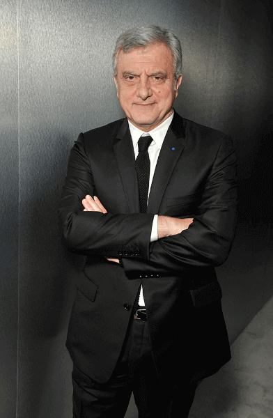

Открыт новый метод борьбы с гипертонией, который спасет миллионы жизней
Устройство от гипертонии будет доступно каждому!
Григорий Игнатьев – известный ученый и изобретатель, который всю жизнь борется с гипертонией, создавая различные препараты и устройства. После 15 лет упорной работы, он открыл новый способ, позволяющий за считанные дни нормализовать давление. После демонстрации нового устройства всему миру он стал настоящей звездой!
Презентация нового браслета
Его открытие опубликовали во всех газетах страны, теперь устройством пользуются большинство клиник. Над созданием устройства Григория Игнатьева работают все известные научные структуры мира. Они создали браслет, который лечит гипертонию, приводит сердцебиение в норму, предотвращает инсульты и продлевает жизнь человека минимум на 10 лет. Согласно решению Национального комитета медицинской реформы, каждый желающий может купить себе устройство по очень низкой цене!
Эксклюзивное интервью с создателем браслета, Григорием Игнатьевым и главной Национального комитета медицинской реформы Евгением Морозовым.
Создатель браслета от гипертонии, известный ученый Григорий Игнатьев.
Корреспондент: “Григорий, вы всю свою жизнь посвятили разработке устройства, способному вылечить гипертонию. Почему вы не сдались, как большинство других ученых?”
Григорий: Я был уверен, что в результате все мои приложенные усилия увенчаются успехом. Конечно, когда несколько лет назад свернули государственное финансирование разработки новых устройств и препаратов, работать стало очень тяжело. В то время и пропала масса ученых, которые только и занимались тем, что осваивали государственные гранты. Мне приходилось работать, исключительно рассчитывая на себя. Когда закончились деньги, пришлось продать свою квартиру, чтобы продолжить работу над браслетом. Самое важное, что у меня все-таки получилось! Когда увидел первые положительные результаты испытаний браслета, я не мог поверить, что у меня все же получилось создать инновационный способ лечения гипертонии. Перепроверил все несколько раз, потом сел на стул и до меня дошло: у меня получилось!
Корреспондент: “Как так вышло, что вы передали права на производство браслета государству?”
Григорий: Я много раз пытался достучаться до государственных структур. Проблема была лишь в том, что я не знал, к кому надо обращаться. Пробовал пробиться через официальные каналы связи. Вы можете представить, какой там уровень бюрократии. Я сам не мог представить. Говорил им: “У меня есть устройство, которое спасет массу жизней, я хочу поговорить с кем-то по поводу его распространения”, а меня посылали чуть ли не матом. Денег я у них не просил, вообще ни слова про финансы. Несколько раз пытался достучаться, но нет, меня посылали куда подальше.
При этом предложения о продаже мне начали поступать, как только об открытии начали говорить все специализированные СМИ.
Корреспондент: “Как много денег предлагали за ваше устройство?”
Григорий: Суммы были огромные. Варьировались от 300-400 тысяч до десятков миллионов долларов. Самое большое предложение сделал один из американских холдингов. Мне предложили выложить права на устройство за 350 миллионов долларов, но с одним условием: я пойду работать к ним и буду контролировать процесс производства и разработки браслета.
Корреспондент: “Почему вы отказались от такой большой суммы? Вы бы могли стать очень богатым человеком, тратить огромные деньги на новые разработки”.
Григорий: Может я и сделал ошибку, что отказался от таких огромных денег, но в первую очередь, когда я разрабатывал этот браслет, я хотел, чтоб мое устройство помогло всему миру. Честно говоря, сам страдал от гипертонии, понимаю, что это за ужасное заболевание. Поэтому я противник того, чтобы на жизнях людей строили огромный бизнес. Для меня очень важно, чтобы браслет был доступен всем, кто страдает от гипертонии.
Помниться случай с американской компанией, которая скупала права на редкие препараты и повышала цены в сотни раз. В результате лекарства от рака и гепатита продавались чуть ли не за десятки тысяч долларов! И сделать этим ничего нельзя. Проводились расследования, гражданские суды – результата ноль. Собственник вправе сам устанавливать стоимость на препарат.
И самое главное, кто сможет купить мой браслет от гипертонии, если он будет стоить несколько десятков тысяч? Никто. Лечиться будет только богатая прослойка населения и коррумпированные чиновники, у которых карманы набиты купюрами. Остальные и дальше будут страдать от заболевания, и самое ужасное, дальше будут умирать.
Корреспондент: “Как же вам все-таки удалось достучаться до тех, кто сидит выше?”
Григорий: Когда пошла волна статей о браслете по всему миру и начали упоминать мое имя, мне сразу же позвонили из Национального комитета медицинской реформы. Естественно, я съездил, встретился и все обсудили.
Там сразу поняли, что вопрос стоит о множестве жизней. Над созданием моего браслета начала работать большая межведомственная группа специалистов из разных структур. Права на браслет пока остаются у меня, чтобы иметь рычаги влияния на процесс. Например, если вдруг решат, что цену на браслет необходимо поднять в десятки раз, то я смогу противостоять этому решению.
Со стороны государства разработку координировал глава Национального комитета медицинской реформы Евгений Морозов.

Именно Национальный комитет медицинской реформы настоял на том, чтобы устройство было доступно всем гражданам, страдающих гипертонией. На самом деле, это первый случай, когда устройство будет распространяться подобным образом, в рамках медицинской реформы.
Корреспондент: “Как именно работает ваше устройство? Почему с ним начал работать именно Национальный комитет медицинской реформы?”
Евгений: Сразу отвечу на второй вопрос: мы первыми вышли с ними на связь. К тому же, согласно
последним решениям, именно сам комитет отвечает за разработку новых медицинских
препаратов и устройств, их распространение среди всего населения.
Наша система здравоохранения настолько коррумпирована, что пришлось создавать отдельную
автономную структуру, которая будет вынесена за ее рамки. Это позволит избежать
коррупции и нарушений в процессе разработки новых устройств и препаратов.
А что касается схемы, по которой работает браслет, то это совершенно новый вариант стабилизации давления. Для начала давайте уясним, как работают старые препараты и устройства от гипертонии. Они принудительно расширяют сосуды и давление начинает падать. При этом, правда, они калечат сосуды и сердце. С каждым приемом такого препарата или использования какого-либо устройства приближается смерть от инсульта или инфаркта. Они никак не влияют основную причину гипертонии – насыщение углекислым газом артериол, мелких артерий.
Браслет, разработанный Григорием Игнатьевым действует с помощью электростимуляции. На приборе установлены два электрода, которые воздействуют на запястье низкочастотным током. Такое воздействие изменяет тонус гладкой мускулатуры мелких артерий. При снижении тонуса сосудов снижается артериальное давление. Помимо этого браслет позволяет полностью вылечить гипертонию за считанные дни, если заболевание на начальной стадии.
Корреспондент: "Гипертония и правда так опасна? Это же просто повышение давления".
Евгений: Просто повышение давления? Тогда встречный вопрос: вы когда-нибудь видели статистику смертности? Сколько примерно умирает людей от сердечно-сосудистых заболеваний, знаете? Около 69%! Это больше, чем две трети! И у каждого – повышенное давление, либо скачущее, либо стабильно высокое. Вы видели хотя бы одного человека, который бы умер от инфаркта или инсульта, но при это от не страдал гипертонией? Могу поспорить с вами, что нет. Каждый, кто умер от инсульта, сердечной недостаточности или инфаркта, имел проблемы с давлением. Все давно поняли, что именно гипертония все это провоцирует. Стоит ее убрать – никаких серьезных заболеваний и тем более, никаких летальных исходов. А если и дальше лечить следствие вместо причины, то можно есть лекарства горстями хоть каждый день, результат будет всегда нулевой.
Во всех случаях причиной сердечно-сосудистых заболеваний является повышенное давление. Именно оно повреждает сосуды и разрушает их стенки. Сосуды загрязняются, появляется аритмия и стенокардия, развивается ишемическая болезнь сердца. По мере развития гипертонии, увеличивается и риск внезапного инсульта или инфаркта. Человек, у которого часто повышается давление, ходит по грани. В любой момент он может умереть.
Корреспондент: “В аптеках продается сотни разных лекарств от повышенного давления, неужели они непригодны для лечения?”
Евгений: Продается и много, но все они работают по одному и тому же принципу, который я описывал выше. Они принудительно расширяют сосуды, повреждают их стенки и перегружают сердце. Конечно, на короткий промежуток времени они приводят давление в норму, но потом это очень негативно сказывается на организме. Пытаясь избавиться от симптомов, не трогая первопричину болезни, вылечить ее практически невозможно. Поэтому смысла принимать такие препараты нет, вы только приближаете смерть.
Корреспондент: “В чем разница между вашим браслетом и всеми остальными препаратами? Он, в отличие других, может полностью вылечить гипертонию?”
Евгений: Браслет, который я разработал, убирает именно первопричину гипертонии – насыщение углекислым газом мелких артерий, из-за чего и начинает изначально повышаться давление. Помимо этого, импульсы, которые генерирует браслет, восстанавливает стенки поврежденных сосудов, предотвращая скачки давления. Предупреждает риск развития ишемической болезни сердца и иных осложнений. Когда вы начинаете пользоваться браслетом, нормализуется сердечный ритм, сердцу больше не приходится работать в авральном режиме.
При всем при этом браслет не просто очередная разработка, технологии которого взяты с других похожих устройств, а это полностью новый метод лечения гипертонии. Браслет безопасен и прост в использовании, максимально эффективен при прохождении курса лечения. Им может пользоваться абсолютно любой человек, начиная с возраста 14 лет.
Буквально сразу после использования браслета у человека полностью снимается угроза внезапного инсульта или инфаркта. Давление постепенно приходит в норму. В отличие от других устройств и препаратов, браслет АВР-051 не имеем негативного воздействия на сердце.
Корреспондент: “Браслет можно будет купить в аптеке? И какая у него будет цена?”
Евгений: Вы ведь в курсе, что как только стал понятен масштаб и уровень эффективности браслета, нас начали атаковать фармацевты. Когда у нас хотели выкупить права на это устройство, мне стало понятно, что после выкупа прав они бы не стали запускать браслет в производство. А если бы и стали, то цена была бы несколько десятков тысяч. Лечение гипертонии и болезней сердца – это самая громадная ниша фармацевтического рынка. Только в США продается лекарств на миллиарды долларов! Аптечные сети – это партнеры фармацевтических компаний, работающих с ними в тесной связке. Так что о нас с нашим браслетом даже слышать не хотят. Несмотря на то, что браслет сейчас это единственный официально рекомендованный способ лечения гипертонии и предотвращения осложнений в виде инсульта или инфаркта. Да и вообще, фармацевты Нацкомитет не любят. Мы уже вынесли представление о запрете 93 препаратов, которые только калечат людей. После такого аптеки с нами работать точно не станут.
Корреспондент: "Если браслет не будет продаваться в аптеках, то где его смогут купить люди?"
Евгений: Если аптеки о нас и слышать не хотят, то мы исключаем их из процесса. Мы сами наладили прямое распространение браслета ABP-051, что позволит продавать его еще дешевле. Мы обсудили несколько вариантов и остановились на самом рациональном. Была создана специальная страница национального комитета медицинской реформы, на которой каждый желающий может оставить заявку. Пока только через нее будет распространяться браслет ABP-051.
Если говорить коротко: человек, желающий приобрести “ABP-051”, оставляет заявку на странице Нацкомитета, после чего с ним связываются, консультируют и отправляют браслет. Интернет сейчас есть у каждого, даже если у человека нет компьютера, то точно есть телефон с выходом в интернет.
Каждый, кто оставит заявку до конца , получит браслет “ABP-051” по очень низкой цене. Это наша специальная акция, чтобы привлечь внимание к браслету. Надеемся, что каждый избавившийся от гипертонии с помощью браслета, будет рекомендовать его другим.
Корреспондент: “Какая будет цена на браслет?”
Евгений: Себестоимость производства браслета довольно высокая. Но нам удалось договориться о том, что из бюджета будет компенсироваться около 65% стоимости устройства. Еще около 20-25% должны компенсироваться из внебюджетных фондов, с которыми до сих пор ведем переговоры. Надеюсь, что по итогу стоимость для покупателя составит не более 10-15% от стоимости производства. Хорошо, что наверху понимают важность того, чтобы браслет был доступен каждому, кто нуждается в нем. Взамен мы дали слово, что право на производство браслета больше никому не будет передано.
Каждый, кто оставить заявку до конца , получит браслет “ABP-051” по очень низкой цене!
Получить ABP-051 со скидкойКомментарии
Наталья Попова
Я видела по телевизору интервью с ученым Григорием Игнатьевым. Гениальный
человек, больше всего тронул момент, когда он настаивал на низкой цене браслета,
отказавшись от огромной суммы денег

Ромола Герра
Наконец смогла давление привести в норму, все благодаря этому браслету.
Пользовалась всего две недели, а давление уже держится в пределах нормы! Больше
никаких таблеток
Раду Команечи
Часто подскакивало давление, мучился от головокружений и жутко болела голова. В
эти моменты я думал, что потеряю сознание. Таблетки не помогали.
Часто подскакивало давление, постоянные головокружения и шум в голове.
Периодически отпрашивался с работы, лишь бы приехать домой и лечь в кровать.
Честно говоря, я боялся, что могу потерять сознание. Как услышал про браслет,
сразу же оформил заказ. После недели его использования мое давление держится
около нормы. Сейчас продолжаю пользоваться браслетом раз в день – этого
достаточно

Антонио Сарто
Скорее всего, лечение гипертонии с помощью браслета в наше время самое
эффективное. Столько шума в обществе насчет него! Даже моя соседка купила себе
браслет, говорит, что ей стало гораздо лучше

Елена Егорова
Мне гипертония передалась по наследству от мамы. Сначала ничего особого, сердце
билось чуть быстрее обычного, но потом начался ад! Я не могла встать с кровати,
в глазах туман и пульсация в голове – так почти каждый день! От врачей толку
ноль, их препараты не работают! Последняя надежда на браслет
Габриела Альба
У меня сотрудница на работе пользуется им, с собой на работу таскает. После
покупки браслета она больше не жалуется на давление, ходит счастливая, улыбается

Юлия Бочарова
Недавно смотрела передачу, где обсуждался этот браслет. Провели несколько
исследований, выяснилось, что браслет действительно лечит гипертонию.

Кристина Ермолаева
Заказала себе браслет. Оставила заявку, мне сразу же перезвонили, расспросили о
моем здоровье, посоветовали курс. Доставили очень быстро:)

Дино Кавалли
Когда пришел в клинику с жалобами на гипертонию, мне сказали, что в моем
возрасте иметь такое заболевание нормально и послали куда подальше. Тогда я и
решил заказать браслет. И знаете, меньше, чем за месяц, мое давление держится
около нормы! Про головокружения, боли и шум в голове я забыл.

Паоло Романо
Всю жизнь мучился от гипертонии. Последние лет десять сидел на таблетках. Но
последний месяц давление очень сильно подскакивало, меня иногда подташнивало и
часто болела голова. Тогда и решил купить себе браслет. Как начал им
пользоваться, с каждым днем мне было все лучше и лучше. За три недели
пользования браслетом мое давление 135/83, чувствую себя замечательно!

Ренато Медичи
Заказал своей маме браслет, из-за гипертонии последнее время ей очень плохо.
После трех дней ей стало гораздо легче, стала более активной и не жалуется на
головные боли.

Олег Зимин
Собрался идти в частную клинику, куда за лечение нужно отвалить круглую сумму.
Подруга сказала, что есть более эффективный – браслет ABP-051. После курса
давление стабильно держится в норме, никаких скачков! Отдам теперь браслет своей
маме, пусть лечится

Альберто Нери
В нашей клинике лечат гипертонию с помощью этого браслета. Приходишь, выписывают
курс около 2-3 недель, приходишь каждый день, на тебя цепляют браслет и сидишь.
Сам проходил этот курс, скажу так, что очень помогло, даже никаких таблеток пить
не пришлось.

Сергей Макеев
Браслет надо постоянно носить на руке? Это же неудобно

Семен Коротков
Нет, достаточно один раз в день нацепить браслет на некоторое время и все. Сам
пользуюсь 1-2 раза в день, утром и вечером. Самочувствие после нескольких дней
гораздо лучше!
Сара Антонеску
У меня была гипертония на начальной стадии. Решила позаботиться о своем здоровье
и заказала на официальном сайте браслет. Через две недели никаких признаков
гипертонии!
Диана Муту
Спасибо, что делитесь отзывами! Сегодня заказала браслет, последняя надежда на
него!

Юрий Герасимов
Полностью избавился от гипертонии! Я поражен! Всего за один курс! Хочется
передать благодарность ученому за такое устройство
Хотите написать сообщение?